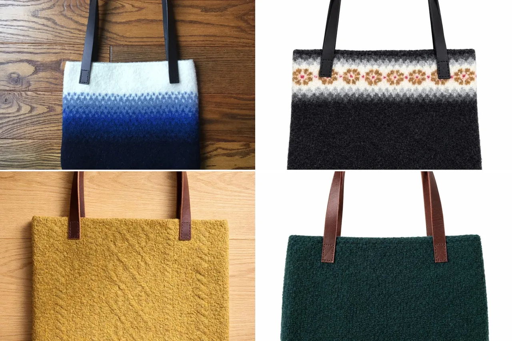
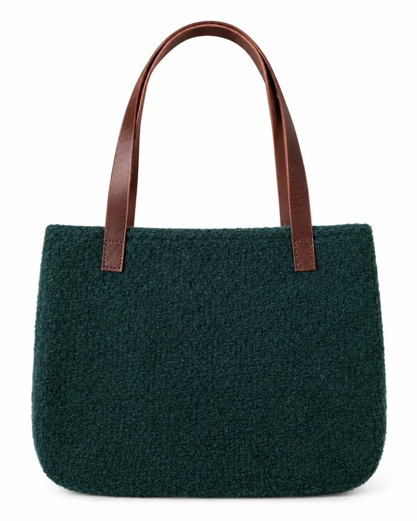
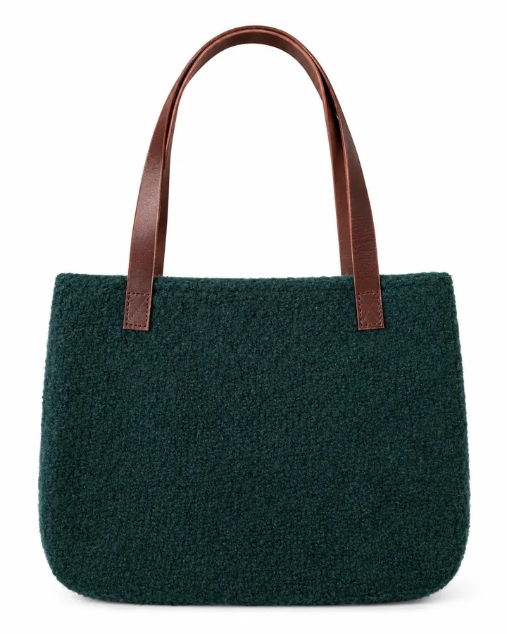
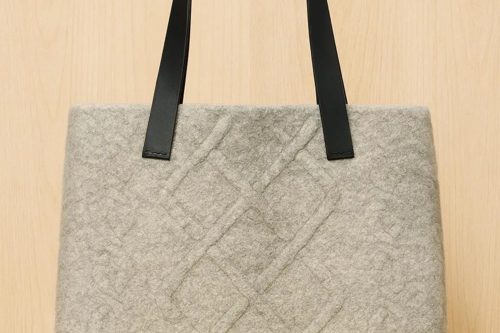
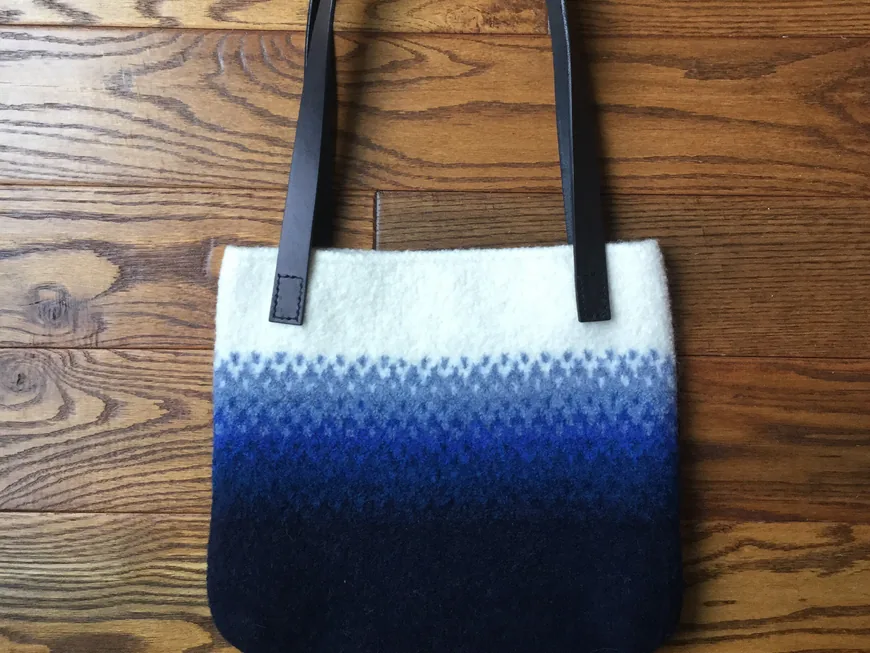
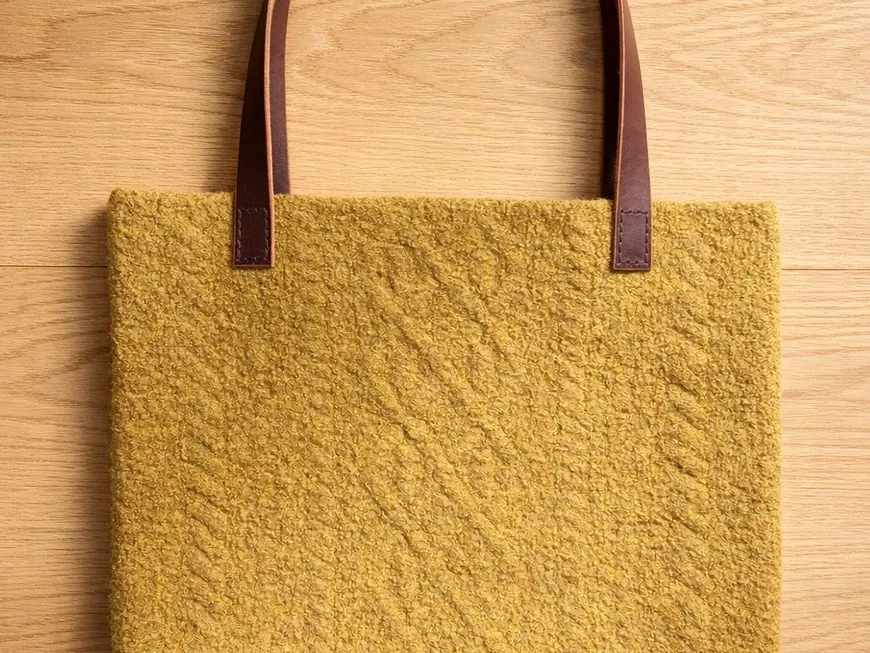
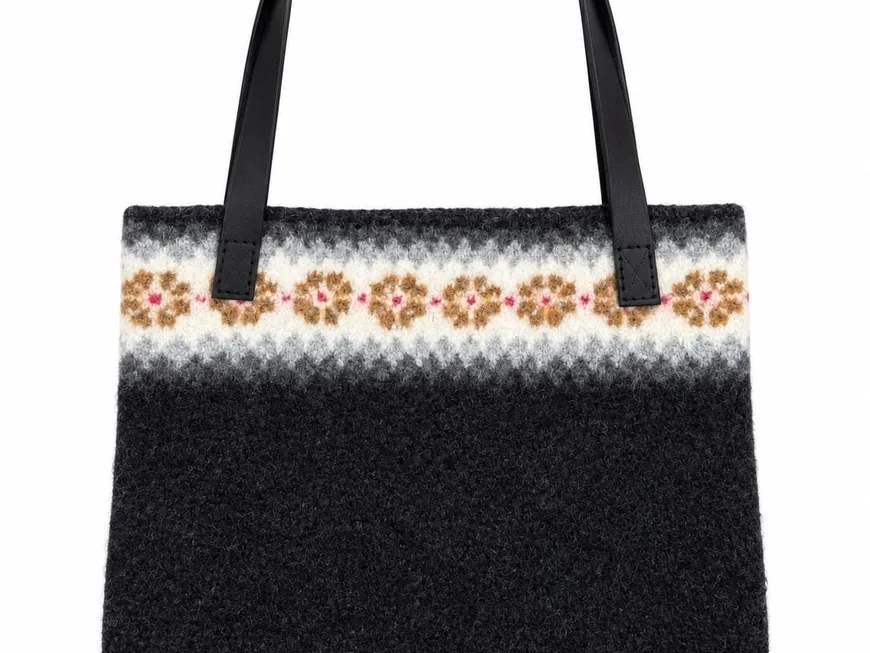
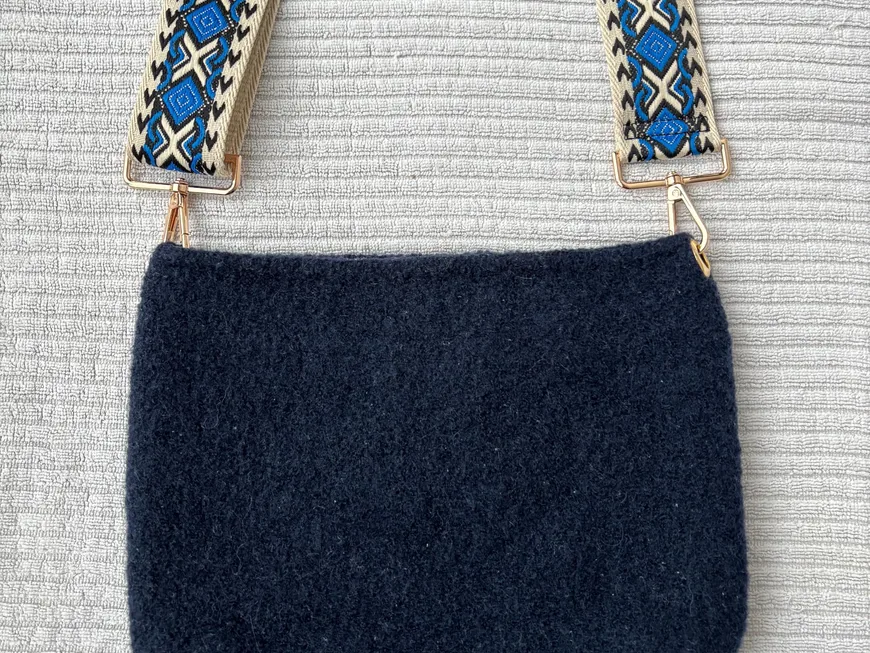

Wool
Soft, warm, hand knit wool.

Wool felt tote bags · Waterloo, Canada
Hand knit, felted, and made to be carried everywhere.

Meet the Artist
Hand knit by Cindy Hartman in Waterloo, Canada
Waterloo Tote Co makes hand knit wool felt tote bags. Thoughtfully made. Beautifully unique. Find your favourite.
Hand knit wool felt tote bags. Thoughtfully made. Beautifully unique. Find your favourite.
Our story

01 How it started
Every Waterloo Tote Co bag is hand knit, then felted, so the wool turns soft, sturdy and full of texture.
A deep forest green, a rich wool texture and warm leather handles: a bag like this has a way of making even a simple outfit feel a little more special.
Each one is made to be carried everywhere, and no two are quite alike. Customers often mention the lovely handwritten note from Cindy tucked in with their order.
— Waterloo Tote Co
02 Where & how it’s made
Cindy knits each tote by hand in wool, felts it into a soft, sturdy fabric, and finishes it with leather handles, from cable designs to ombre colours and felted florals.

03 What makes it special
Soft, warm, hand knit wool.
No two quite alike.
Made with care in Waterloo.
Reviews
What we make
Ombre totes, cable design totes, colourwork bags and crossbody bags in wool felt. Here is what you will find in the shop.

Wool felt totes that fade from deep blue to white.

Gold, grey and cream totes with knit cable patterns.

Black wool totes with a bright Fair Isle band.

Navy wool felt crossbody bags with woven straps.
Everything is sold through the online shop, with secure checkout and buyer protection.
Stay in the loop
Sign up to be the first to know about sales and new products.
You’re in! 🎉
Continue to the shopHand knit in Waterloo, Canada. Follow along on Instagram for new totes as they come off the needles!
Visit the shopFind me elsewhere